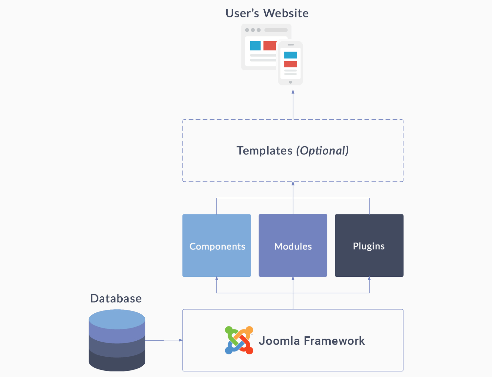
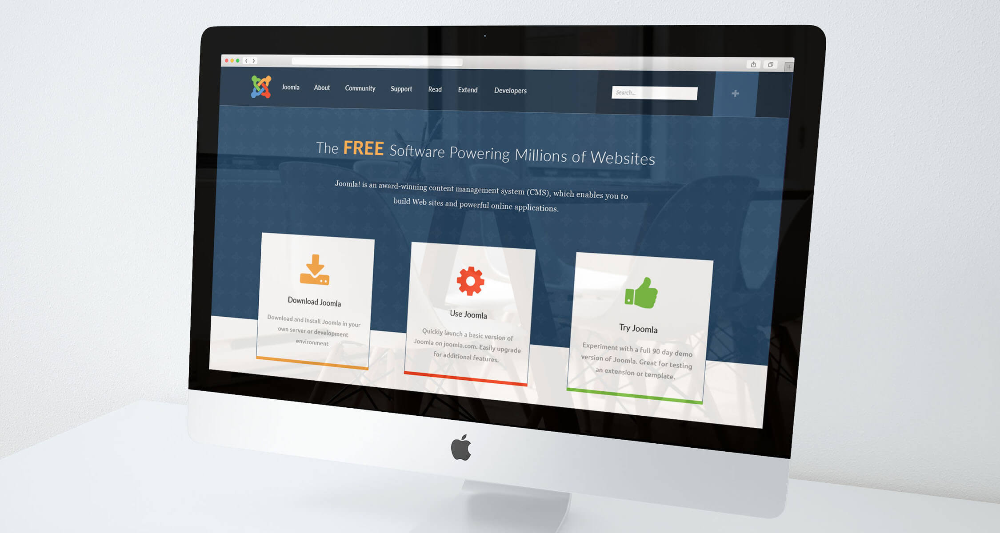
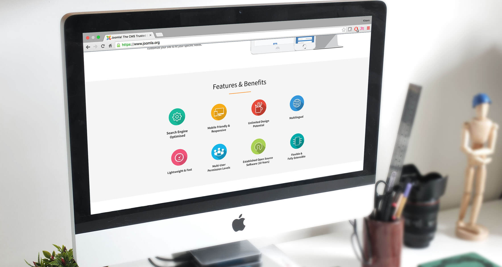
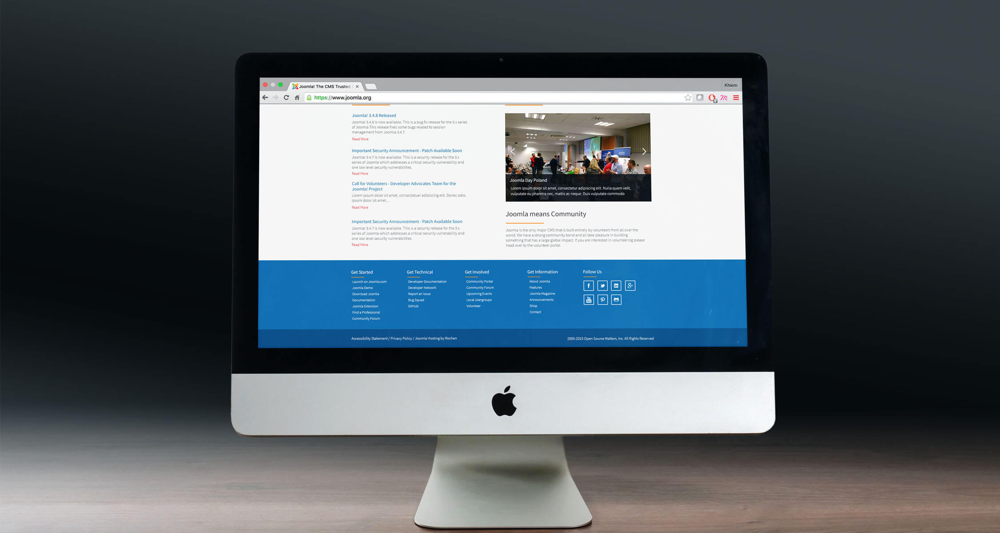

A fresh new look
Joomla! is a free and open-source content management system (CMS) for publishing web content. It is built on a model–view–controller web application framework that can be used independently of the CMS. As part of the product development roadmap, the Production Leadership Team has decided to execute a complete redesign project for the next two versions of the system, Joomla 3.5 and 3.6 (desktop and mobile), as well as two primary associated Joomla websites - Joomla.org and Joomla.com.
Joomla CMS architecture
Volunteers around the world were recruited for this project, and I was very fortunate to have obtained the role of UX/UI Designer - responsible for driving the end-to-end Product Design process, from user research, low-fidelity wireframing, usability testing, to eventual high-fidelity graphic design.
Design samples for Joomla.org
For a small glimpse into some design proposals I created for Joomla.org, click here to access a full-screen slideshow. Simply click on the right-most area of the screen to see the next design; click on the left-most area of the screen to revisit the previous design. Note that this is not an interactive prototype.
  Still curious?
In June 2016, I left the Joomla project to pursue other academic/professional goals. Nonetheless, the lessons I've learned from this experience will always be irreplaceable as I continue to advance on in my Product Design career. At the same time, the opportunity to have met and befriended some of the most wonderful and talented people around the world was truly an amazing gift.
On another positive note, as of September 2016, the releases of Joomla 3.5 and 3.6 have helped to increase user retention by ~15% - a considerable success noted by the Product Leadership Team. A lot of positive and supporting feedback has been received from existing as well as new users in regards to the new UX/UI improvements to the tool. As a designer who played a small part in contributing to this outcome, I couldn't help but feel a bit proud of the work we did for the overall Joomla brand. It is a small start, but it is an encouraging start for greater results nonetheless.
If you consider yourself a web development ninja, or perhaps you simply want to learn more, check out Joomla right now! You may even find ways to contribute and effectively become part of the Joomla family.